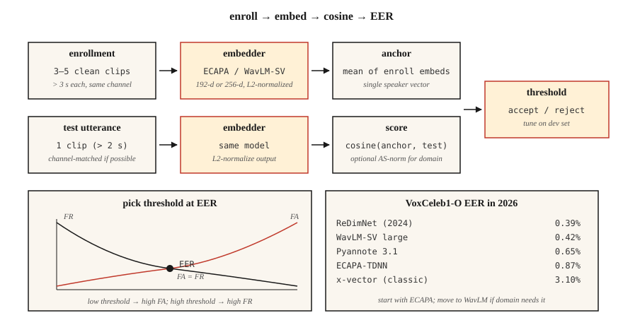

Speaker Recognition & Verification
ASR asks "what did they say?" Speaker recognition asks "who said it?" The math looks the same — embeddings plus cosine — but every production decision hinges on a single EER number.
- Type
- Build
- Languages
- Python
- Prerequisites
- Phase 6 · 02 (Spectrograms & Mel), Phase 5 · 22 (Embedding Models)
- Time
- ~45 minutes
#The Problem
A user says a passphrase. You want to know: is this the person they claim to be (verification, 1:1), or is it the first person in your enrollment bank (identification, 1:N)? Or neither — is this an unknown speaker (open-set)?
Pre-2018: GMM-UBM + i-vectors. Reasonable EER but fragile to channel shift (phone vs laptop) and emotion. 2018–2022: x-vectors (TDNN backbone trained with angular margin). 2022+: ECAPA-TDNN and WavLM-large embeddings. By 2026 the field is dominated by three models and one metric.
The metric is EER — Equal Error Rate. Set your decision threshold so False Accept Rate = False Reject Rate. The crossover is EER. Used in every paper, every leaderboard, every procurement call.
#The Concept

The pipeline. Enrollment: record 5–30 seconds of the target speaker; compute a fixed-dimension embedding (192-d for ECAPA-TDNN, 256-d for WavLM-large). Verification: get the test utterance embedding; compute cosine similarity; compare to a threshold.
ECAPA-TDNN (2020, still dominant 2026). Emphasized Channel Attention, Propagation and Aggregation - Time-Delay Neural Network. 1D conv blocks with squeeze-excitation, multi-head attention pooling, followed by a linear layer to 192-d. Trained on VoxCeleb 1+2 (2,700 speakers, 1.1M utterances) with Additive Angular Margin loss (AAM-softmax).
WavLM-SV (2022+). Fine-tune a pretrained WavLM-large SSL backbone with AAM loss. Higher quality but slower — 300+ MB vs 15 MB.
x-vector (baseline). TDNN + statistics pooling. Classic; still useful on CPU / edge.
AAM-softmax. Standard softmax with added margin m in the angular space: cos(θ + m) for the correct class. Forces inter-class angular separation. Typical m=0.2, scale s=30.
#Scoring
- Cosine between enrollment and test embeddings. Threshold-based decision.
- PLDA (Probabilistic LDA). Project embeddings into a latent space where same-speaker vs different-speaker has a closed-form likelihood ratio. Added on top of cosine for +10–20% EER reduction. Standard pre-2020; now used only in closed-set setups.
- Score normalization.
S-normorAS-norm: normalize each score against a cohort of imposter means and stds. Essential for cross-domain eval.
#Numbers you should know (2026)
| Model | VoxCeleb1-O EER | Params | Throughput (A100) |
|---|---|---|---|
| x-vector (classic) | 3.10% | 5 M | 400× RT |
| ECAPA-TDNN | 0.87% | 15 M | 200× RT |
| WavLM-SV large | 0.42% | 316 M | 20× RT |
| Pyannote 3.1 segmentation + embedding | 0.65% | 6 M | 100× RT |
| ReDimNet (2024) | 0.39% | 24 M | 100× RT |
#Diarization
"Who spoke when" in a multi-speaker clip. Pipeline: VAD → segment → embed each segment → cluster (agglomerative or spectral) → smooth boundaries. Modern stack: pyannote.audio 3.1, which bundles speaker segmentation + embedding + clustering behind one call. 2026 SOTA DER on AMI is ~15% (down from 23% in 2022).
#Build It
#Step 1: toy embedding from MFCC statistics
def embed_mfcc_stats(signal, sr):
frames = featurize_mfcc(signal, sr, n_mfcc=13)
mean = [sum(f[i] for f in frames) / len(frames) for i in range(13)]
std = [
math.sqrt(sum((f[i] - mean[i]) ** 2 for f in frames) / len(frames))
for i in range(13)
]
return mean + std # 26-dNot SOTA by a mile — for teaching only. code/main.py uses this as a proof-of-concept on synthetic speaker data.
#Step 2: cosine similarity + threshold
def cosine(a, b):
dot = sum(x * y for x, y in zip(a, b))
na = math.sqrt(sum(x * x for x in a))
nb = math.sqrt(sum(x * x for x in b))
return dot / (na * nb) if na and nb else 0.0
def verify(enroll, test, threshold=0.75):
return cosine(enroll, test) >= threshold#Step 3: EER from similarity pairs
def eer(same_scores, diff_scores):
thresholds = sorted(set(same_scores + diff_scores))
best = (1.0, 1.0, 0.0) # (fa, fr, threshold)
for t in thresholds:
fr = sum(1 for s in same_scores if s < t) / len(same_scores)
fa = sum(1 for s in diff_scores if s >= t) / len(diff_scores)
if abs(fa - fr) < abs(best[0] - best[1]):
best = (fa, fr, t)
return (best[0] + best[1]) / 2, best[2]Returns (eer, threshold_at_eer). Report both.
#Step 4: production with SpeechBrain
from speechbrain.pretrained import EncoderClassifier
clf = EncoderClassifier.from_hparams(source="speechbrain/spkrec-ecapa-voxceleb")
# enroll: average the embeddings of 3-5 clean samples
enroll = torch.stack([clf.encode_batch(load(x)) for x in enrollment_clips]).mean(0)
# verify
score = clf.similarity(enroll, clf.encode_batch(load("test.wav"))).item()
verdict = score > 0.25 # ECAPA typical threshold; tune on your data#Step 5: diarize with pyannote
from pyannote.audio import Pipeline
pipe = Pipeline.from_pretrained("pyannote/speaker-diarization-3.1")
diarization = pipe("meeting.wav", num_speakers=None)
for turn, _, speaker in diarization.itertracks(yield_label=True):
print(f"{turn.start:.1f}–{turn.end:.1f} {speaker}")#Use It
The 2026 stack:
| Situation | Pick |
|---|---|
| Closed-set 1:1 verification, edge | ECAPA-TDNN + cosine threshold |
| Open-set verification, cloud | WavLM-SV + AS-norm |
| Diarization (meetings, podcasts) | pyannote/speaker-diarization-3.1 |
| Anti-spoofing (replay / deepfake detection) | AASIST or RawNet2 |
| Tiny embedded (KWS + enrollment) | Titanet-Small (NeMo) |
#Pitfalls
- Channel mismatch. Model trained on VoxCeleb (web video) ≠ phone-call audio. Always evaluate on target channel.
- Short utterances. EER degrades sharply below 3 seconds of test audio.
- Enrollment with noise. One noisy enrollment poisons the anchor. Use ≥3 clean samples and average.
- Fixed threshold across conditions. Always tune the threshold on a held-out dev set from the target domain.
- Cosine on non-normalized embeddings. L2-normalize first; otherwise the magnitude dominates.
#Ship It
Save as outputs/skill-speaker-verifier.md. Pick model, enrollment protocol, threshold-tuning plan, and fraud safeguards.
#Exercises
- Easy. Run
code/main.py. Builds synthetic "speakers" (different tone profiles), enrolls, computes EER on a 100-pair trial list. - Medium. Use SpeechBrain ECAPA on 30 VoxCeleb1 utterances (5 speakers × 6 each). Compute EER with cosine vs PLDA.
- Hard. Build the full enroll → diarize → verify pipeline with
pyannote.audio. Evaluate DER on AMI dev set.
#Key Terms
| Term | What people say | What it actually means |
|---|---|---|
| EER | The headline metric | Threshold where False Accept = False Reject. |
| Verification | 1:1 | "Is this Alice?" |
| Identification | 1:N | "Who is speaking?" |
| Open-set | Unknown possible | Test set can contain unenrolled speakers. |
| Enrollment | Registering | Computing a speaker's reference embedding. |
| AAM-softmax | The loss | Softmax with additive angular margin; forces cluster separation. |
| PLDA | Classic scoring | Probabilistic LDA; likelihood-ratio scoring on top of embeddings. |
| DER | Diarization metric | Diarization Error Rate — miss + false alarm + confusion. |
#Further Reading
- Snyder et al. (2018). X-Vectors: Robust DNN Embeddings for Speaker Recognition — the classic deep-embedding paper.
- Desplanques et al. (2020). ECAPA-TDNN — dominant architecture 2020–2026.
- Chen et al. (2022). WavLM: Large-Scale Self-Supervised Pre-Training for Full Stack Speech Processing — SSL backbone for SV and diarization.
- Bredin et al. (2023). pyannote.audio 3.1 — production diarization + embedding stack.
- VoxCeleb leaderboard (updated 2026) — current EER standings across models.
Nice. That's 4 minutes of Speech & Audio behind you.
Continue to Text-to-Speech (TTS) — From Tacotron to F5 and Kokoro →